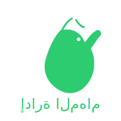

قائمة المهام اليومية
أولوية منخفضة
أولوية متوسطة
أولوية عالية
إضافة
إلغاء التعديل
فلترة حسب:
{/* Accessibility */}
تصفية المهام حسب الحالة
عرض جميع المهام
المهام النشطة فقط
المهام المكتملة فقط
المهام مع تذكيرات نشطة
تصفية المهام حسب الأولوية
جميع مستويات الأولوية
أولوية منخفضة
أولوية متوسطة
أولوية عالية
ترتيب المهام
ترتيب حسب تاريخ الإضافة (الأحدث أولاً)
ترتيب حسب الأولوية (الأعلى أولاً)
ترتيب أبجدي حسب النص
ترتيب حسب موعد التذكير (الأقرب أولاً)
ترتيب حسب الحالة (النشطة أولاً)
تجميع المهام
عرض بدون تجميع
تجميع حسب مستوى الأولوية
تجميع حسب تاريخ الإضافة
تجميع حسب الوسوم
تجميع حسب حالة التذكير
تجميع حسب حالة الإكمال
تصدير
استيراد
جارٍ تحميل المهام...